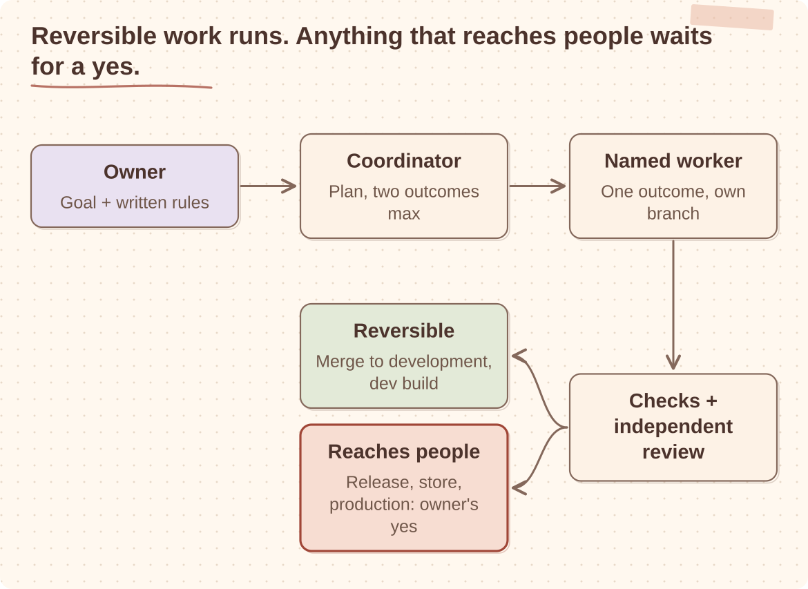

Most of my hands-on engineering now runs through AI task sessions. I use them on my own mobile game, Animal Park, on Luke, the assistant I built for my household, and on client work. Agents write most of the code. I decide what they may do on their own, and I decide when something is done.
That second part turned out to be the real work. Agents made writing code cheap. They did not make checking it cheap, and they did not make it safe to let software decide what reaches users. In AI Makes Building Easy. Production Is Hard. I argued that in general. This is the set-up I actually use now, and the mistakes that shaped it.
One coordinator, and no more than two things at once
Each project has one coordinator session. It holds the plan, starts a named worker session for each outcome, reads what comes back and brings decisions to me. Workers report to the coordinator, and the coordinator checks their claims before passing them on.
I set this up for Animal Park on 24 October 2026, reusing the pattern I already had on Luke and on client work. In the next three days, pull requests went from #6 to #41.
That looks like a productivity story. It is mostly a review story. Every one of those changes still needed someone to read it, test it or decide it was not worth merging. So I keep each project to two active outcomes at a time. With more, the agents do not produce more finished work. They produce more unreviewed work, and the queue moves from the code to me.
The number of sessions I can open was never the constraint. My review capacity is.
What agents may do is written down
The most useful file in each project is a short list of what agents may do without asking.

On Animal Park, workers may merge checked changes into the development branch and build a development Android version. My reasoning at the time was short: we can always revert, it's just us. Production deploys, store releases, tags, version bumps and remote config changes still need my yes, every time.
The rule behind it is simple. Anything reversible inside the agent's own branch is fine. Anything that leaves the branch and reaches users, other people or production data needs a named human yes for that action. A standing approval is a decision with a date, a scope and a reason, written where the agents read it.
A few details mattered more than I expected. An agent reporting that something was approved is not approval; the yes has to reach the session that acts on it. One instruction can authorise a named sequence of steps, but the sequence stops at the first failed precondition instead of improvising around it. And agents never edit their own permissions. On my home server, read-only inspection is always available, but root access needs a tap from me on my phone. If I do not answer within 15 minutes, the agent carries on without it.
The obvious objection is that gates slow everything down, and on a one-person project I could let agents merge anything. I would rather remove gates on reversible steps, which is what Animal Park does, and keep them where a mistake reaches people. A gate costs one message. An unreviewed production change costs an incident.
Done has more than one state
The mistake that changed my definition of done was a small one. A crash in Animal Park 1.1.19 was missed because only the test phone's log was read. The build looked fine on that phone, so it looked done.
Since then, done on Animal Park includes crash reporting and the store's pre-launch report, not only a clean run on my own device.
Agents are very good at reporting progress in the language of completion. A finished chat is not green CI. Green CI is not merged. Merged is not working on a phone. I ask for those as separate states, and I ask the coordinator to verify worker claims from the source: the commit, the hash on the remote branch, the build name. "I pushed the fix" is a claim. The commit on the remote is evidence.
I also ask agents to say what they did not verify. An honest gap is more useful than an implied pass.
The implementer never reviews its own change. How much independence the review needs depends on what the change can affect, not on how many lines it touches. Identity, deleting data, payments and releases get a read-only check first and a separate reviewer.
A prompt is not a security boundary
Luke taught me the most about where judgement belongs. Between June and October 2026 it went through more than 1,000 commits, and the decisions that lasted all moved safety out of the prompt.
Early versions used phrase lists to decide what a message meant. They broke on Polish and on ordinary replies. Meaning moved to the model; permissions, identity, limits and replay protection stayed in code. Skills hold judgement. Code holds safety.
The same applies to anything the assistant reads. Email and web pages are evidence, never instructions. Every fetch goes through one function that checks permission again on each redirect. The model can propose an action, but it cannot give itself permission to perform it.
I also stopped testing the wording of skills. Those tests cost more than they caught. What worked better was a versioned skill, my review of the exact diff, a check of the next real run and one command to roll back.
One review found a race I would not have looked for. A slow model verdict could be overtaken by a human edit and land on a version of the record it had never seen. Every verdict now records the revision it was based on.
Someone else's codebase is different
On client work, nothing is pre-approved, because merges are the team's decisions, not mine. Before any agent changed code, I wrote down what the team had documented and, separately, what I had only observed, so the agents would not treat my guesses as the team's rules. Every pull request, cherry-pick and release still goes through the team's normal review.
What I would set up first
None of this is specific to AI. It is how I would run a team. The difference is that agents do not push back when authority is unclear. They do what they were asked, very quickly.
If I started a new project tomorrow, I would put these in place before asking an agent to write code:
And if you are starting with agents on your own work, the first question I would ask is which of their actions you can undo. Those can run on their own. The rest wait for you.